MINISTÉRIO DA EDUCAÇÃO
SECRETARIA DE EDUCAÇÃO PROFISSIONAL E TECNOLÓGICA
INSTITUTO FEDERAL DE EDUCAÇÃO, CIÊNCIA E TECNOLOGIA DE SANTA CATARINA
CÂMPUS LAGES
CURSO CIÊNCIA DA COMPUTAÇÃO
INTRODUÇÃO À PROGRAMAÇÃO
LISTA DE EXERCÍCIOS 1
Aluno:
Fabrício Iaronka de Souza |
Data:
22/03/24
01. Calcule os resultados das seguintes expressões:
5 + 3 * 6 / 2
36 / 3 * 2 – 5 +8
30 / 4 * 6
30 % 4 * 6
5 * 7 % 3 + 4 / 2 + 5
(5 * 7 % 3 + 4) / 2 + 5
(5 * 7 % 3) + 4 / (2 + 5)
(5 * 7 % 3) + 4 / 2 + 5
02. Monte a tabela do teste de mesa para o programa abaixo.
public static void main(String[] args) {
int p, vari, total, a, i;
float valor_a, x;
vari = 2;
total = 10;
valor_a = 7;
a = -4;
i = 80;
x = 4;
x = total / vari;
x = x + 1;
a = a + 1;
p = 10;
a = i / p;
a = a + i % 6;
valor_a = p * valor_a + x;
}
Resposta para 1 e 2: Exercicios Lista1.docx
03. Faça um programa que leia dois números, calcule e apresente a soma dos quadrados
destes números.
Resposta: Exer3.java
04. Faça um programa que leia dois números, calcule e apresente o quadrado da soma
destes números.
Resposta: Exer4.java
05. Crie um programa que leia as medidas da base e altura de um retângulo, calcule e
apresente a área e o perímetro deste retângulo.
Resposta: Exer5.java
06. Escreva um programa que leia a temperatura em graus Celsius e apresente a
temperatura correspondente em graus Fahrenheit, usando a fórmula abaixo.

Resposta: Exer6.java
07. Uma sorveteria vende três tipos de picolés. Sabendo-se que o picolé tipo 1 é vendido
por R$ 1,50, o do tipo 2 por R$ 2,00 e o do tipo 3 por R$ 0,75, faça um programa que leia
a quantidade vendida de cada tipo de picolé e apresente o valor arrecadado com as
vendas de cada tipo de picolé e o valor total das vendas.
Resposta: Exer7.java
08. Uma revendedora de carros paga a seus vendedores um salário fixo equivalente a dois
salários-mínimos, mais uma comissão de R$ 150,00 por carro vendido e mais uma
comissão de 5% do valor das vendas. Crie um programa que leia o valor do saláriomínimo, quantos carros o vendedor vendeu ao longo do mês e o valor total das vendas.
Após ler os dados, o programa deve calcular e apresentar o valor do salário do
funcionário.
Resposta: Exer8.java
09. Uma pessoa foi ao supermercado e comprou:
Q quilos de café, cujo custo unitário é X;
L litros de leite, cujo custo unitário é Y;
B pacotes de bolacha, cujo custo unitário é Z.
Faça um programa que leia estes dados e imprima, para cada produto: nome do produto,
total gasto com ele. Além disto, ele deve apresentar o total gasto na compra.
Resposta: Exer9.java
10. Faça um programa que leia um número inteiro e apresente o quociente e o resto da
divisão deste número por 2.
Resposta: Exer10.java
11. (DESAFIO) Crie um programa que leia um número inteiro que representa a
quantidade de segundos de um vídeo. O programa deve calcular e apresentar quantas
horas, minutos e segundos dura este vídeo.
Resposta: Exer11.java
12. Um restaurante a quilo cobra R$39,00 por quilo de refeição. Escreva um programa
que leia o peso do prato montado pelo cliente (em quilos) e imprima o valor a pagar. Obs.
O prato vazio pesa 450 gramas.
Resposta: Exer12.java
13. Escreva um programa que receba um horário (horas, minutos e segundos) e
determine quantos segundos já se passaram desde que o dia começou.
Resposta: Exer13.java
14. Escreva um programa que receba um horário (horas, minutos e segundos) e
determine quantos segundos ainda faltam para terminar o dia (considere o dia com 24
horas).
Resposta: Exer14.java
15. Faça um programa que receba o peso de uma pessoa, calcule e apresente:
a) o novo peso se a pessoa engordar 15% sobre o peso digitado;
b) o novo peso se a pessoa emagrecer 20% sobre o peso digitado.
Resposta: Exer15.java
16. João recebeu seu salário de R$ 1500,00 e precisa pagar duas contas (C1=R$ 200,00
e C2=R$120,00). Como as contas estão atrasadas, João terá de pagar multa de 2% sobre
cada conta. Faça um programa que calcule e mostre quanto restará do salário do João.
Resposta: Exer16.java